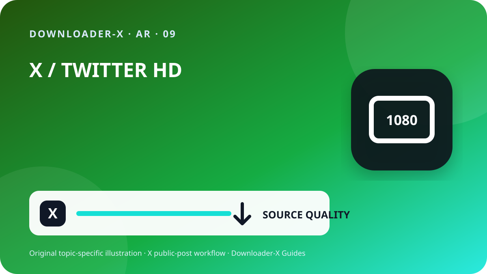

إجابة سريعة
موقع تحميل فيديوهات تويتر hd — افتح منشور X الفردي الذي يحتوي على الفيديو وتأكد من أنه متاح للعامة، ثم استخدم قائمة المشاركة لنسخ رابط المنشور. ألصق الرابط في Downloader-X واختر ملف MP4 يظهر فعليًا في النتيجة، وبعد الحفظ شغّل البداية والمنتصف والنهاية للتحقق من الصورة والصوت. استخدم هذه الخطوات فقط مع فيديو تملكه أو مادة بترخيص مناسب أو محتوى منحك صاحبه إذنًا واضحًا. معالجة الرابط العام لا تحتاج إلى كلمة مرور X أو رمز تحقق أو ملفات تعريف ارتباط أو تحكم عن بعد.

ثلاث خطوات باستخدام Downloader-X
- يجب أن يشير الرابط إلى منشور واحد يحتوي على الفيديو. من قائمة المشاركة في X اختر نسخ رابط المنشور، ثم افتحه مرة في علامة تبويب جديدة للتأكد من الوجهة. رابط الملف الشخصي أو الخط الزمني يضم منشورات متعددة ولا يحدد الفيديو المطلوب. يساعد هذا الفحص على التفريق بين رابط خاطئ وعطل في الخدمة، ويمنع الضغط المتكرر الذي قد ينتج ملفات ناقصة أو مكررة.
- ألصق الرابط الذي تم التحقق منه في أداة X وابدأ المعالجة مرة واحدة. انتظر الخيارات الفعلية ثم قارن العنوان أو المعاينة بالمنشور الأصلي. لا تختر إلا التنسيقات والدقات الظاهرة في النتيجة. لا تعتبر ادعاء 4K أو 1080p أو إزالة العلامة صحيحًا إذا لم يقدمه المصدر. عند الفشل يجب إظهار خطأ واضح؛ لا ينبغي تقديم صفحة HTML أو برنامج تثبيت أو ملف خاطئ على أنه تنزيل فيديو ناجح.
- لا تكتمل المهمة باختفاء شريط التقدم، بل عندما يعمل الملف كفيديو حقيقي. افحص قبل الأرشفة أو المشاركة:
ما الذي يعنيه هذا البحث
موقع تحميل فيديوهات تويتر hd. للمنشورات العامة فقط. تعتمد الصيغة والجودة على الخيارات الفعلية التي يعيدها المصدر.
4. اختر HD وفق المصدر والغرض
تكون تسمية HD موثوقة فقط عندما تأتي من نسخة فيديو متاحة فعليًا في المنشور العام. على الهاتف والكمبيوتر المحمول تحقق 720p غالبًا توازنًا بين الوضوح والبيانات والمساحة، بينما تناسب 1080p الشاشة الكبيرة عندما يوفرها المصدر بالفعل. قد تختلف الجودة بين ملفين بالدقة نفسها بسبب معدل البت والترميز والضغط، لذلك شغّل الملف ولا تعتمد على اسمه. إذا كان الصوت مهمًا فاختر نسخة تجمع الفيديو والصوت أو تحقق من المسار مباشرة بعد الحفظ.
6. تحقق من الملف المحفوظ
لا تكتمل المهمة باختفاء شريط التقدم، بل عندما يعمل الملف كفيديو حقيقي. افحص قبل الأرشفة أو المشاركة:
نوع الملف مطابق للاختيار مثل MP4 وليس HTML أو برنامج تثبيت.
الحجم ليس صفرًا ومناسب تقريبًا للمدة والجودة.
شغّل البداية والمنتصف والنهاية وتحقق من الصورة والمدة والصوت.
سجل اسم الملف والمجلد ورابط المصدر والإذن أو الترخيص.
5. الحفظ على iPhone وAndroid وWindows وMac
على iPhone وiPad تظهر تنزيلات Safari عادة في تطبيق الملفات داخل Downloads أو الموقع المحدد. على Android راجع قائمة تنزيلات المتصفح أو تطبيق Files. على Windows وmacOS وLinux وChromeOS افحص مجلد Downloads وسجل المتصفح قبل إعادة الضغط. إذا كانت المساحة قليلة فاحذف النسخ غير اللازمة أو اختر دقة أقل. لا تثبت مدير تنزيل مجهولًا لمجرد أن صفحة تدعي أنه مطلوب.
سجل المصدر قبل الاحتفاظ طويلًا
عند العمل على عدة مقاطع، سجل الحساب وتاريخ المنشور والرابط الدائم والوصف المختصر والنسخة المختارة والحجم وأساس الإذن. يمنع ذلك فقدان المصدر ويسهل مراجعة النسب والترخيص لاحقًا. في منشور مقتبس أو رد أو سلسلة، انسخ رابط المنشور الذي يحتوي على الفيديو فعليًا، لا رابط منشور يذكره أو يقتبسه فقط.
حل المشكلة من المصدر إلى الملف
عد إلى منشور الفيديو وانسخ الرابط من المشاركة؛ الملف الشخصي لا يحدد وسيطًا واحدًا.
قد يكون محميًا أو مقيدًا. لا ترسل بيانات الدخول أو الكوكيز؛ اطلب نسخة مصرحًا بها.
تأكد من بقاء المنشور ووجود فيديو أصلي وأن الرابط يفتح، ثم حدّث مرة واحدة.
احذف الملف ولا تغير امتداده، ثم أعد فحص الرابط وخيار الفيديو الحقيقي.
تحقق من الأصل ومستوى صوت الجهاز ومشغل موثوق آخر، واختر نسخة مدمجة عند الحاجة.
الأمان والخصوصية
لا يحتاج تدفق الرابط العام إلى كلمة مرور X أو رمز المصادقة الثنائية أو كوكيز مصدرة أو تحكم عن بعد أو ملف تنفيذي أو تعطيل حماية الجهاز. توقف إذا عُرض ملف .exe أو .dmg أو إضافة متصفح غير مرتبطة. افحص النطاق والنوع والمصدر قبل الفتح. على الأجهزة المشتركة انقل الملفات المصرح بها من المجلدات العامة واحذف النسخ المؤقتة غير الضرورية.
1. تحقق من الوصول العام وحق الاستخدام
ابدأ من المنشور الأصلي، لا من صفحة الملف الشخصي أو نتائج البحث أو لقطة شاشة أو معاينة معاد توجيهها. افتح الرابط في علامة تبويب جديدة وطابق الحساب والنص والصورة المصغرة والمدة. ظهور المنشور للعامة يوضح إمكانية الوصول الحالية فقط، ولا يمنح تلقائيًا حق إعادة النشر أو التعديل أو البيع أو الاستخدام الإعلاني. إذا كان الحساب محميًا أو المنشور محذوفًا أو يحتاج إلى وصول خاص أو يخضع لتقييد، فتوقف واطلب نسخة مصرحًا بها من المالك بدل محاولة تجاوز التحكم.
الإتاحة العامة إعداد وصول وليست ترخيص استخدام. احفظ فيديوك أو مادة بترخيص متوافق أو محتوى بإذن واضح. لإعادة النشر أو التعديل أو الاستخدام التجاري تأكد من أن الإذن يغطي الغرض واحتفظ بدليل مكتوب. احترم الأشخاص والمعلومات الخاصة والأماكن الحساسة والقاصرين الظاهرين في المقطع، ولا تنسب عمل شخص آخر إلى نفسك.
2. انسخ رابط المنشور الدقيق
يجب أن يشير الرابط إلى منشور واحد يحتوي على الفيديو. من قائمة المشاركة في X اختر نسخ رابط المنشور، ثم افتحه مرة في علامة تبويب جديدة للتأكد من الوجهة. رابط الملف الشخصي أو الخط الزمني يضم منشورات متعددة ولا يحدد الفيديو المطلوب. يساعد هذا الفحص على التفريق بين رابط خاطئ وعطل في الخدمة، ويمنع الضغط المتكرر الذي قد ينتج ملفات ناقصة أو مكررة.
افتح منشور الفيديو الأصلي وانتقل إلى صفحته الفردية.
استخدم المشاركة لنسخ الرابط بدل كتابته يدويًا.
تحقق من نطاق x.com أو twitter.com وأنه رابط منشور.
افتحه في علامة تبويب جديدة وطابق الحساب والنص والصورة والفيديو.
احتفظ برابط المصدر ودليل الإذن مع الملف.
3. ألصق الرابط واختر النتيجة الحقيقية فقط
ألصق الرابط الذي تم التحقق منه في أداة X وابدأ المعالجة مرة واحدة. انتظر الخيارات الفعلية ثم قارن العنوان أو المعاينة بالمنشور الأصلي. لا تختر إلا التنسيقات والدقات الظاهرة في النتيجة. لا تعتبر ادعاء 4K أو 1080p أو إزالة العلامة صحيحًا إذا لم يقدمه المصدر. عند الفشل يجب إظهار خطأ واضح؛ لا ينبغي تقديم صفحة HTML أو برنامج تثبيت أو ملف خاطئ على أنه تنزيل فيديو ناجح.
نظم الملفات وتجنب التكرار
يمكن أن يتضمن الاسم موضوعًا مختصرًا والحساب والتاريخ والجودة، مثل topic_creator_2026-08-30_720p.mp4. افصل الملفات المؤقتة عن الملفات المتحقق منها واحتفظ بالنسخ اللازمة فقط. الضغط المتكرر لا يحسن الجودة وغالبًا ينشئ تكرارًا أو ملفًا جزئيًا. خزّن رابط المصدر والنسب وشروط الاستخدام في ملاحظة أو جدول للمشروع نفسه.
قائمة الستين ثانية الأخيرة
الخدمة لا تطلب بيانات الدخول أو الكوكيز.
فحوص تمنع النتيجة الخاطئة
دليل عملي لمنصة X · 1
احتفظ برابط المصدر ودليل الإذن مع الملف.
ألصق الرابط الذي تم التحقق منه في أداة X وابدأ المعالجة مرة واحدة. انتظر الخيارات الفعلية ثم قارن العنوان أو المعاينة بالمنشور الأصلي. لا تختر إلا التنسيقات والدقات الظاهرة في النتيجة. لا تعتبر ادعاء 4K أو 1080p أو إزالة العلامة صحيحًا إذا لم يقدمه المصدر. عند الفشل يجب إظهار خطأ واضح؛ لا ينبغي تقديم صفحة HTML أو برنامج تثبيت أو ملف خاطئ على أنه تنزيل فيديو ناجح.
لا تكتمل المهمة باختفاء شريط التقدم، بل عندما يعمل الملف كفيديو حقيقي. افحص قبل الأرشفة أو المشاركة:
احذفه ولا تغير اسمه ثم افحص الرابط وخيار الفيديو من جديد.
نعم إذا وصلت إلى المنشور العام نفسه وتم التحقق من الوجهة.
دليل عملي لمنصة X · 2
لأن الدقة تعتمد على الملف الأصلي والنسخ المتاحة فعليًا.
شغّل البداية والمنتصف والنهاية وتحقق من الصورة والمدة والصوت.
افتح منشور الفيديو الأصلي وانتقل إلى صفحته الفردية.
ابدأ من المنشور الأصلي، لا من صفحة الملف الشخصي أو نتائج البحث أو لقطة شاشة أو معاينة معاد توجيهها. افتح الرابط في علامة تبويب جديدة وطابق الحساب والنص والصورة المصغرة والمدة. ظهور المنشور للعامة يوضح إمكانية الوصول الحالية فقط، ولا يمنح تلقائيًا حق إعادة النشر أو التعديل أو البيع أو الاستخدام الإعلاني. إذا كان الحساب محميًا أو المنشور محذوفًا أو يحتاج إلى وصول خاص أو يخضع لتقييد، فتوقف واطلب نسخة مصرحًا بها من المالك بدل محاولة تجاوز التحكم.
لا يحتاج تدفق الرابط العام إلى كلمة مرور X أو رمز المصادقة الثنائية أو كوكيز مصدرة أو تحكم عن بعد أو ملف تنفيذي أو تعطيل حماية الجهاز. توقف إذا عُرض ملف .exe أو .dmg أو إضافة متصفح غير مرتبطة. افحص النطاق والنوع والمصدر قبل الفتح. على الأجهزة المشتركة انقل الملفات المصرح بها من المجلدات العامة واحذف النسخ المؤقتة غير الضرورية.
دليل عملي لمنصة X · 3
يمكن أن يتضمن الاسم موضوعًا مختصرًا والحساب والتاريخ والجودة، مثل topic_creator_2026-08-30_720p.mp4. افصل الملفات المؤقتة عن الملفات المتحقق منها واحتفظ بالنسخ اللازمة فقط. الضغط المتكرر لا يحسن الجودة وغالبًا ينشئ تكرارًا أو ملفًا جزئيًا. خزّن رابط المصدر والنسب وشروط الاستخدام في ملاحظة أو جدول للمشروع نفسه.
تكون تسمية HD موثوقة فقط عندما تأتي من نسخة فيديو متاحة فعليًا في المنشور العام. على الهاتف والكمبيوتر المحمول تحقق 720p غالبًا توازنًا بين الوضوح والبيانات والمساحة، بينما تناسب 1080p الشاشة الكبيرة عندما يوفرها المصدر بالفعل. قد تختلف الجودة بين ملفين بالدقة نفسها بسبب معدل البت والترميز والضغط، لذلك شغّل الملف ولا تعتمد على اسمه. إذا كان الصوت مهمًا فاختر نسخة تجمع الفيديو والصوت أو تحقق من المسار مباشرة بعد الحفظ.
قد يكون محميًا أو مقيدًا. لا ترسل بيانات الدخول أو الكوكيز؛ اطلب نسخة مصرحًا بها.
الأسئلة الشائعة
موقع تحميل فيديوهات تويتر hd?
للمنشورات العامة فقط. تعتمد الصيغة والجودة على الخيارات الفعلية التي يعيدها المصدر.
هل يمكن التنزيل من حساب محمي؟
لا. الدليل للمنشورات العامة ولا يساعد على تجاوز القيود.
لماذا لا تتوفر 1080p دائمًا؟
لأن الدقة تعتمد على الملف الأصلي والنسخ المتاحة فعليًا.
هل يجوز إعادة نشر منشور عام مباشرة؟
لا. يلزم ترخيص أو إذن يغطي إعادة التوزيع والغرض المقصود.
هل تعمل روابط x.com وtwitter.com؟
نعم إذا وصلت إلى المنشور العام نفسه وتم التحقق من الوجهة.
أدلة X ذات صلة
استخدم رابط المنشور العام الصحيح
للمنشورات العامة فقط. تعتمد الصيغة والجودة على الخيارات الفعلية التي يعيدها المصدر.
افتح Downloader-X